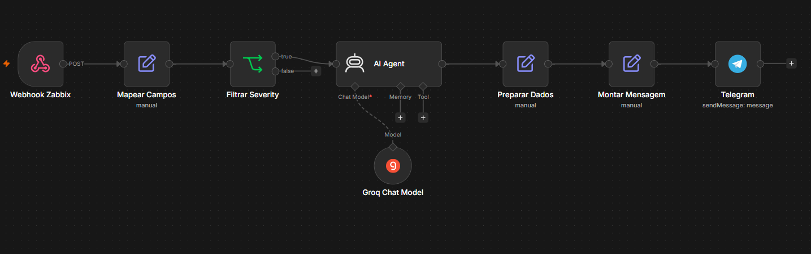

Firewalls geram volumes absurdos de logs. O problema não é falta de dado, é falta de tempo para analisar tudo em tempo real. Ameaças passam despercebidas por horas, às vezes dias, simplesmente porque ninguém consegue acompanhar o volume.
Foi pensando nisso que montei esse laboratório.
O que foi construído
Usando o n8n como orquestrador, criei um fluxo que começa no FortiGate e termina com um alerta inteligente chegando no Telegram. O FortiGate identifica tráfego suspeito e dispara o evento. O n8n captura esse evento e consulta o IP na AbuseIPDB, que retorna o score de reputação e o histórico de atividade maliciosa daquele endereço.
Com essas informações em mãos, um Agente de IA entra em cena para analisar o contexto, classificar a gravidade da ameaça e sugerir uma ação. Tudo isso é consolidado e enviado como uma mensagem estruturada e legível no Telegram, em questão de segundos.

O que isso muda na prática
O analista recebe no celular não apenas um aviso de IP bloqueado, mas o que aquele IP já fez, qual o risco real que ele representa e qual o próximo passo recomendado. Sem precisar abrir cinco ferramentas diferentes para chegar nessa conclusão.
Esse lab foi um exercício de pensar segurança de forma mais inteligente, menos volume de ruído, mais contexto útil na hora certa.